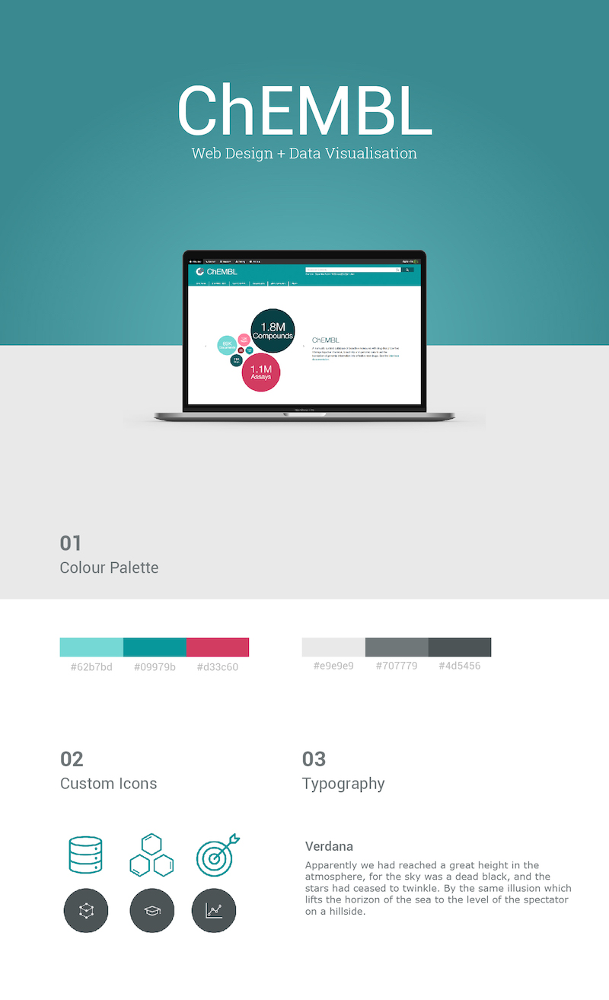
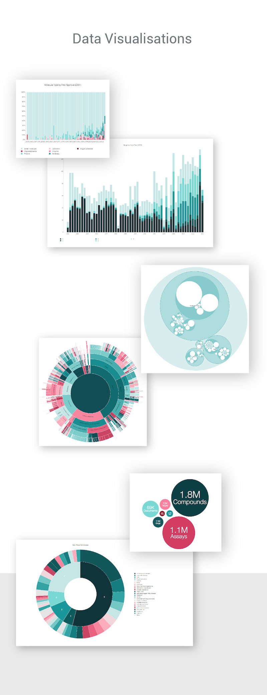

ChEMBL is a curated database of bioactive molecules with drug-like properties.
Web redesign and reusable data visualizations to help researchers with their computational analyses and communicate their findings clearly and effectively.
Visit the database → www.ebi.ac.uk/chembl/
Role: Front-end development, data visualization, UI design,
Technologies: D3.js, ElasticSearch, Python

